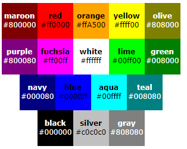

Las medidas en CSS se emplean, para definir la altura, anchura y márgenes de los elementos y para establecer el tamaño de letra del texto. Todas las medidas se indican como un valor numérico entero o decimal seguido de una unidad de medida (sin ningún espacio en blanco entre el número y la unidad de medida).
Mediante unidades absolutas se indica que está completamente definida, ya que su valor no depende de otro valor de referencia.
Estas no están completamente definidas, es decir, su valor siempre está referenciado respecto a otro valor. A pesar de su aparente dificultad, son las más utilizadas en el diseño web por la flexibilidad con la que se adaptan a los diferentes medios.
em (no confundir con la etiqueta de HTML) relativa respecto del tamaño de letra del elemento. ex relativa respecto de la altura de la letra x ("equis minúscula") del tipo y tamaño de letra del elemento. px (píxel) relativa respecto de la resolución de la pantalla del dispositivo en el que se visualiza la página HTML. Ejemplo: p { font-size: 32px; margin: 1em; }
Los colores en CSS se pueden indicar de cinco formas diferentes: palabras clave, colores del sistema, RGB hexadecimal, RGB numérico y RGB porcentual. El método más habitual es el del RGB hexadecimal.s
Imagen tomada de: Colores CSS
RGB consiste en definir un color indicando la cantidad de color rojo, verde y azul que se debe mezclar para obtener ese color. Ejemplo p { color: rgb(71, 98, 176); }
Las componentes RGB de un color se indican mediante un porcentaje. Ejemplo:p { color: rgb(27%, 38%, 69%); }
Es el método más complicado para indicar los colores, pero es el método más utilizado. prácticamente todos los sitios web reales utilizan exclusivamente este método. Ejemplo: p { color: #4762B0; }